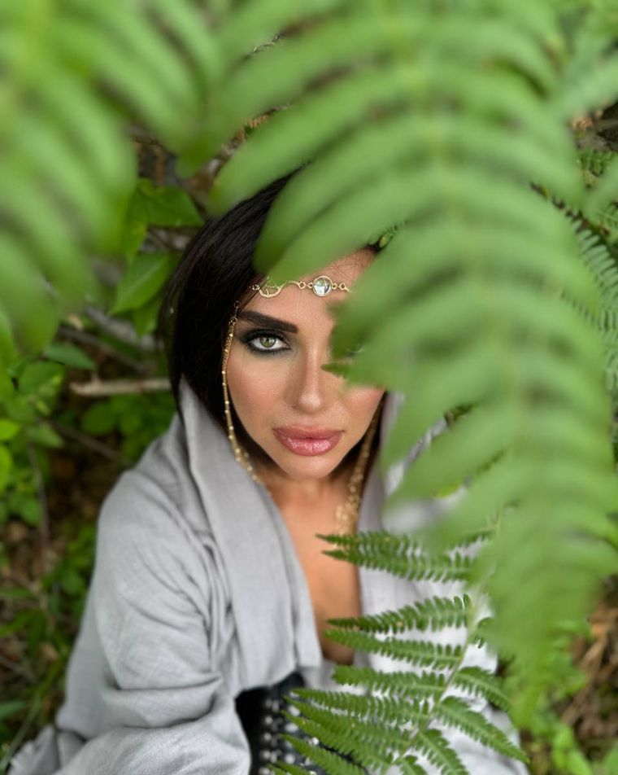

Психокинетика · Ментальная магия · Эзотерика
В своей работе я использую инструменты психокинетики, каналы древа Сефирот как инструменты. Провожу очищение от негатива, порч, проклятий, привязок и чёрной магии, а также утилизирую неадаптивных активных союзников.
Ремонтирую денежный канал и луч захвата, которые отвечают за финансы, доход и общее благосостояние. Работаю с родовыми каналами и активирую ваших денежных союзников. Также провожу теургии (обращения) к Божествам с нужными вам качествами по индивидуальному запросу — венец безбрачия, поиск партнёра, самооценка и другие темы.
Не судьба, а карта возможностей. Выбор только за вами.Работа с ментальными телами и внутренними образами как инструмент перемен.
Психокинетика в моей практике — это работа с ментальным пространством человека: с образами, установками и энергетическими программами, которые формируют его состояние и повседневную реальность.
Я снимаю чужие установки, застрявшие страхи и негативные программы, которые не дают жить в своём ритме. Через работу с вниманием, намерением и внутренними образами человек меняет своё отношение к ситуации — и вслед за этим меняется сама ситуация.
Это не про «предсказать», а про то, чтобы навести порядок в настоящем: увидеть, что именно вас держит, и мягко это отпустить, освободив место новому.
Практики по очищению, восстановлению и наполнению ментальных тел, а также астрологические разборы.
Обнуление чакр до идеальных настроек, утилизация печатей посмертия, слив болезней, затирание каналов с бывшими партнёрами и неблагоприятными ситуациями, удаление лярв, порч, проклятий посредством канала. Защита тринадцатого канала.
Эта чистка про избавление от всякого деструктива, который вы цепляете ежедневно. На всё происходящее вокруг вы посмотрите другими глазами. Полная перезагрузка чакровой системы.
ЗаписатьсяВосстановление серебряной нити жизни — основы вашего физического тела и жизненной энергии.
Создание вертикальных связей, притяжение монады, реализация планов, достижение целей, лёгкие сделки, клиенты, подарки, внимание окружающих или конкретного человека. Горизонтальные связи между людьми: бизнес, партнёрские, родственные и дружеские отношения.
Возвращение вашей энергии посредством заклинания «веретено». Огненная защита 15 аркана.
ЗаписатьсяПрошлые кармические воплощения и неадаптивные союзники проявляются в вашей сегодняшней жизни, склоняя к необдуманным действиям. Если вас мучает вопрос, почему именно так с вами происходит — ответы в 16 Аркане.
Здесь можно не только выявить неадаптивного союзника, но и переписать прошлое воплощение с положительным исходом — и тем самым изменить свою жизнь здесь и сейчас.
ЗаписатьсяДесятый канал — изменения судьбы, изменение линий вероятности. Включение в 10 канал даёт возможность зацепить информацию из параллельных реальностей, где что-то складывается лучше для вас.
Сила 10 Аркана — способность формировать ваше будущее, чувствовать многовариантность и выбирать то, что необходимо здесь и сейчас. Техника «золотое отражение» — где вы здоровы, успешны и счастливы.
Записаться17-й канал — поток восстанавливающей энергии. Духи Оли, ментал растений и животных, помогают восстанавливать ментальное, физическое и эмоциональное состояние.
В канале идёт работа с самочувствием: наполнение кокона энергией жизни, восстановление сил и внутреннего ресурса.
ЗаписатьсяРаскрытие вашего кода рождения: вы напрямую знакомитесь с самим собой — видите положительные и теневые стороны, понимаете систему своей мотивации.
Плюсы и минусы характера, денежные блоки, блоки красоты, теневые стороны. Чёткая инструкция к выведению вашей личности на новый уровень.
ЗаписатьсяСнятие блоков с семи энергетических центров, от которых зависят здоровье, уверенность и способность любить.
После чакровой чистки отваливаются ненужные люди, в жизнь приходят новые возможности и осознание, спокойно принимаются решения, которых вы раньше боялись. Защита огнём и заклинанием Триглава.
ЗаписатьсяРазборы по траекториям планет — от прогноза на год до карты, которая указывает, где именно раскрывается каждая сфера жизни. Момент рождения — уникальный код: расположение планет формирует вашу натальную карту, карту талантов и потенциала.
Не судьба, а карта возможностей.Прогноз на год:
Сильная, часто болезненная связь между двумя людьми, которая ощущается как уже знакомая, притягивает и отталкивает одновременно, повторяет одни и те же сценарии и учит чему-то конкретному.
Разбор помогает распознать повторяющийся паттерн и решить: оставаться или уходить. Нужны данные рождения — ваши и партнёра.
ЗаписатьсяКарта мира с линиями по вашей натальной карте. В разных точках планеты по-разному «включаются» стороны личности и судьбы: где-то легче даётся любовь, где-то карьера, где-то накапливается напряжение.
Метод помогает понять, чего ждать от города или региона, где вы хотите жить или куда собираетесь, — поддержки или сложностей.
ЗаписатьсяНе можешь определиться, что именно тебе нужно? Запись на консультацию открыта.
Ритуальные обращения к Божествам, чьи качества отвечают именно вашему запросу — защита, любовь, изобилие, сила и другие темы. Подбираю индивидуально под вашу ситуацию.
15 аркан пронизывает весь мир насквозь и является рычагом управления — им создаются связи между людьми, деньгами, целями. Это про деньги, статус и вашу реализацию.
Символ независимости, силы и тёмной женской энергии. Освобождение от чужих ожиданий и работа с теневой стороной себя.
Если не хватает уверенности, не складываются отношения, не понимаете, как раскрыть женскую энергию и отстоять границы — эта теургия для вас.
ЗаписатьсяБогиня перемен и завершений. Помогает отпустить старое, закрыть тяжёлые циклы и мягко пройти через трансформацию.
ЗаписатьсяЛюбовь, привлекательность, женственность и гармония в отношениях. Раскрытие притягательности и обаяния.
ЗаписатьсяПроводник и защитник. Работа с переходами, страхами и тем, что скрыто; наведение порядка в тонком плане.
ЗаписатьсяСолнечная сила, энергия и лидерство. Мощь для реализации, уверенности и движения к целям.
ЗаписатьсяУстранение препятствий, удача в делах и новых начинаниях, мудрость в решениях.
ЗаписатьсяИзобилие, деньги и материальный достаток. Работа с денежным потоком и благосостоянием.
ЗаписатьсяПрощение, исцеление души, милосердие и внутренний свет. Обретение покоя и опоры.
ЗаписатьсяЗащита дома, женственность, радость и чувственность. Гармония, лёгкость и хорошее самочувствие.
ЗаписатьсяЗапись на общую теургию — напишите мне в личку.
Голосовые сообщения или видеозвонок на платформе Zoom, час на разговор. Никаких ботов и готовых шаблонов — рядом с вами буду я лично. Использую инструмент диагностики — карты Таро.
Не можешь определиться, что именно тебе нужно? Начни с консультации.
Материалы и интервью с участием Натальи Шелест.
Здесь появятся ссылки на статьи и интервью в прессе. (раздел заполняется)
Место для видео- и аудио-материалов с участием Натальи. (раздел заполняется)
Комментарии и колонки по темам эзотерики и психокинетики. (раздел заполняется)
Место для реального отзыва клиента. (добавим настоящие отзывы)
Место для реального отзыва клиента. (добавим настоящие отзывы)
Место для реального отзыва клиента. (добавим настоящие отзывы)
Пришлите реальные отзывы — вставлю их сюда.
Консультация проходит онлайн — голосовыми сообщениями или видеозвонком на платформе Zoom, около часа. Я работаю с вами лично, без ботов и готовых шаблонов, и использую карты Таро как инструмент диагностики.
Начните с личной консультации. На ней мы вместе разберёмся с вашим запросом и подберём подходящий метод работы.
Да, вся работа проходит онлайн, поэтому расстояние не имеет значения — я работаю с людьми из разных городов и стран.
Напишите мне — обсудим ваш запрос и подберём удобное время. Ссылки в разделе «Контакты» ниже.
Напишите мне — расскажите свой запрос, и мы подберём формат работы и удобное время.
Или на почту: ya.zimina87@yandex.ru — нажмите, адрес скопируется